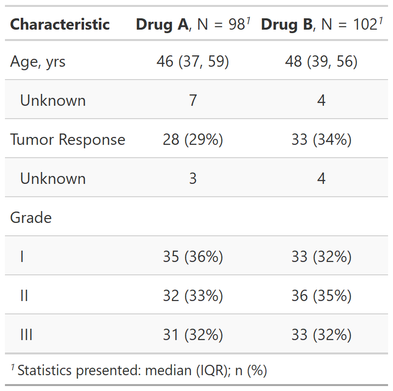

| as_gt {gtsummary} | R Documentation |
Function converts a gtsummary object to a gt_tbl object.
Function is used in the background when the results are printed or knit.
A user can use this function if they wish to add customized formatting
available via the gt package.
You can install gt with remotes::install_github("rstudio/gt", ref = gtsummary::gt_sha).
Review the tbl_summary vignette or tbl_regression vignette for detailed examples in the 'Advanced Customization' section.
as_gt(x, include = everything(), exclude = NULL, omit = NULL)
x |
Object created by a function from the gtsummary package (e.g. tbl_summary or tbl_regression) |
include |
Commands to include in output. Input may be a vector of
quoted or unquoted names. tidyselect and gtsummary select helper
functions are also accepted.
Default is |
exclude |
DEPRECATED. |
omit |
DEPRECATED. |
A gt_tbl object

Daniel D. Sjoberg
tbl_summary tbl_regression tbl_uvregression tbl_survival
# Requires the gt package
# remotes::install_github("rstudio/gt", ref = gtsummary::gt_sha)
library(gt)
as_gt_ex <-
trial[c("trt", "age", "response", "grade")] %>%
tbl_summary(by = trt) %>%
as_gt()